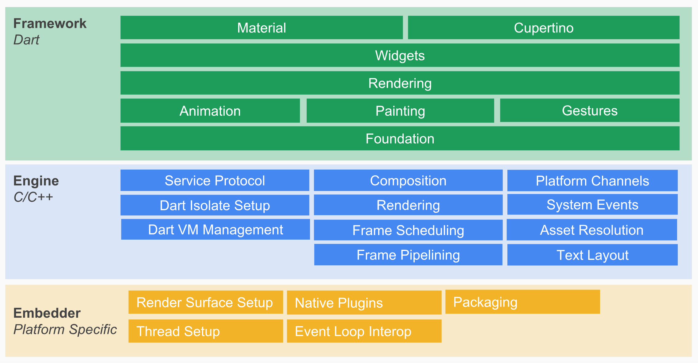
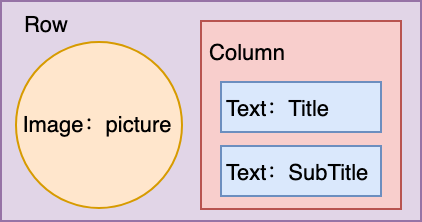
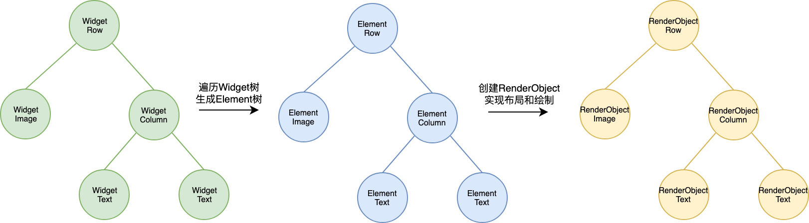

- 00 开篇词 为什么每一位大前端从业者都应该学习Flutter？.md.html
- 01 预习篇 · 从0开始搭建Flutter工程环境.md.html
- 02 预习篇 · Dart语言概览.md.html
- 03 深入理解跨平台方案的历史发展逻辑.md.html
- 04 Flutter区别于其他方案的关键技术是什么？.md.html
- 05 从标准模板入手，体会Flutter代码是如何运行在原生系统上的.md.html
- 06 基础语法与类型变量：Dart是如何表示信息的？.md.html
- 07 函数、类与运算符：Dart是如何处理信息的？.md.html
- 08 综合案例：掌握Dart核心特性.md.html
- 09 Widget，构建Flutter界面的基石.md.html
- 10 Widget中的State到底是什么？.md.html
- 11 提到生命周期，我们是在说什么？.md.html
- 12 经典控件（一）：文本、图片和按钮在Flutter中怎么用？.md.html
- 13 经典控件（二）：UITableView_ListView在Flutter中是什么？.md.html
- 14 经典布局：如何定义子控件在父容器中排版的位置？.md.html
- 15 组合与自绘，我该选用何种方式自定义Widget？.md.html
- 16 从夜间模式说起，如何定制不同风格的App主题？.md.html
- 17 依赖管理（一）：图片、配置和字体在Flutter中怎么用？.md.html
- 18 依赖管理（二）：第三方组件库在Flutter中要如何管理？.md.html
- 19 用户交互事件该如何响应？.md.html
- 20 关于跨组件传递数据，你只需要记住这三招.md.html
- 21 路由与导航，Flutter是这样实现页面切换的.md.html
- 22 如何构造炫酷的动画效果？.md.html
- 23 单线程模型怎么保证UI运行流畅？.md.html
- 24 HTTP网络编程与JSON解析.md.html
- 25 本地存储与数据库的使用和优化.md.html
- 26 如何在Dart层兼容Android_iOS平台特定实现？（一）.md.html
- 27 如何在Dart层兼容Android_iOS平台特定实现？（二）.md.html
- 28 如何在原生应用中混编Flutter工程？.md.html
- 29 混合开发，该用何种方案管理导航栈？.md.html
- 30 为什么需要做状态管理，怎么做？.md.html
- 31 如何实现原生推送能力？.md.html
- 32 适配国际化，除了多语言我们还需要注意什么_.md.html
- 33 如何适配不同分辨率的手机屏幕？.md.html
- 34 如何理解Flutter的编译模式？.md.html
- 35 Hot Reload是怎么做到的？.md.html
- 36 如何通过工具链优化开发调试效率？.md.html
- 37 如何检测并优化Flutter App的整体性能表现？.md.html
- 38 如何通过自动化测试提高交付质量？.md.html
- 39 线上出现问题，该如何做好异常捕获与信息采集？.md.html
- 40 衡量Flutter App线上质量，我们需要关注这三个指标.md.html
- 41 组件化和平台化，该如何组织合理稳定的Flutter工程结构？.md.html
- 42 如何构建高效的Flutter App打包发布环境？.md.html
- 43 如何构建自己的Flutter混合开发框架（一）？.md.html
- 44 如何构建自己的Flutter混合开发框架（二）？.md.html
- 特别放送 温故而知新，与你说说专栏的那些思考题.md.html
- 结束语 勿畏难，勿轻略.md.html
- 捐赠
09 Widget，构建Flutter界面的基石
你好，我是陈航。
在前面的Flutter开发起步和Dart基础模块中，我和你一起学习了Flutter框架的整体架构与基本原理，分析了Flutter的项目结构和运行机制，并从Flutter开发角度介绍了Dart语言的基本设计思路，也通过和其他高级语言的类比深入认识了Dart的语法特性。
这些内容，是我们接下来系统学习构建Flutter应用的基础，可以帮助我们更好地掌握Flutter的核心概念和技术。
在第4篇文章“Flutter区别于其他方案的关键技术是什么？”中，我和你分享了一张来自Flutter官方的架构图，不难看出Widget是整个视图描述的基础。这张架构图很重要，所以我在这里又放了一次。

图1 Flutter架构图
备注：此图引自Flutter System Overview
那么，Widget到底是什么呢？
Widget是Flutter功能的抽象描述，是视图的配置信息，同样也是数据的映射，是Flutter开发框架中最基本的概念。前端框架中常见的名词，比如视图（View）、视图控制器（View Controller）、活动（Activity）、应用（Application）、布局（Layout）等，在Flutter中都是Widget。
事实上，Flutter的核心设计思想便是“一切皆Widget”。所以，我们学习Flutter，首先得从学会使用Widget开始。
那么，在今天的这篇文章中，我会带着你一起学习Widget在Flutter中的设计思路和基本原理，以帮助你深入理解Flutter的视图构建过程。
Widget渲染过程
在进行App开发时，我们往往会关注的一个问题是：如何结构化地组织视图数据，提供给渲染引擎，最终完成界面显示。
通常情况下，不同的UI框架中会以不同的方式去处理这一问题，但无一例外地都会用到视图树（View Tree）的概念。而Flutter将视图树的概念进行了扩展，把视图数据的组织和渲染抽象为三部分，即Widget，Element和 RenderObject。
这三部分之间的关系，如下所示：
图2 Widget，Element与RenderObject
Widget
Widget是Flutter世界里对视图的一种结构化描述，你可以把它看作是前端中的“控件”或“组件”。Widget是控件实现的基本逻辑单位，里面存储的是有关视图渲染的配置信息，包括布局、渲染属性、事件响应信息等。
在页面渲染上，Flutter将“Simple is best”这一理念做到了极致。为什么这么说呢？Flutter将Widget设计成不可变的，所以当视图渲染的配置信息发生变化时，Flutter会选择重建Widget树的方式进行数据更新，以数据驱动UI构建的方式简单高效。
但，这样做的缺点是，因为涉及到大量对象的销毁和重建，所以会对垃圾回收造成压力。不过，Widget本身并不涉及实际渲染位图，所以它只是一份轻量级的数据结构，重建的成本很低。
另外，由于Widget的不可变性，可以以较低成本进行渲染节点复用，因此在一个真实的渲染树中可能存在不同的Widget对应同一个渲染节点的情况，这无疑又降低了重建UI的成本。
Element
Element是Widget的一个实例化对象，它承载了视图构建的上下文数据，是连接结构化的配置信息到完成最终渲染的桥梁。
Flutter渲染过程，可以分为这么三步：
- 首先，通过Widget树生成对应的Element树；
- 然后，创建相应的RenderObject并关联到Element.renderObject属性上；
- 最后，构建成RenderObject树，以完成最终的渲染。
可以看到，Element同时持有Widget和RenderObject。而无论是Widget还是Element，其实都不负责最后的渲染，只负责发号施令，真正去干活儿的只有RenderObject。那你可能会问，既然都是发号施令，那为什么需要增加中间的这层Element树呢？直接由Widget命令RenderObject去干活儿不好吗？
答案是，可以，但这样做会极大地增加渲染带来的性能损耗。
因为Widget具有不可变性，但Element却是可变的。实际上，Element树这一层将Widget树的变化（类似React 虚拟DOM diff）做了抽象，可以只将真正需要修改的部分同步到真实的RenderObject树中，最大程度降低对真实渲染视图的修改，提高渲染效率，而不是销毁整个渲染视图树重建。
这，就是Element树存在的意义。
RenderObject
从其名字，我们就可以很直观地知道，RenderObject是主要负责实现视图渲染的对象。
在前面的第4篇文章“Flutter区别于其他方案的关键技术是什么？”中，我们提到，Flutter通过控件树（Widget树）中的每个控件（Widget）创建不同类型的渲染对象，组成渲染对象树。
而渲染对象树在Flutter的展示过程分为四个阶段，即布局、绘制、合成和渲染。 其中，布局和绘制在RenderObject中完成，Flutter采用深度优先机制遍历渲染对象树，确定树中各个对象的位置和尺寸，并把它们绘制到不同的图层上。绘制完毕后，合成和渲染的工作则交给Skia搞定。
Flutter通过引入Widget、Element与RenderObject这三个概念，把原本从视图数据到视图渲染的复杂构建过程拆分得更简单、直接，在易于集中治理的同时，保证了较高的渲染效率。
RenderObjectWidget介绍
通过第5篇文章“从标准模板入手，体会Flutter代码是如何运行在原生系统上的”的介绍，你应该已经知道如何使用StatelessWidget和StatefulWidget了。
不过，StatelessWidget和StatefulWidget只是用来组装控件的容器，并不负责组件最后的布局和绘制。在Flutter中，布局和绘制工作实际上是在Widget的另一个子类RenderObjectWidget内完成的。
所以，在今天这篇文章的最后，我们再来看一下RenderObjectWidget的源码，来看看如何使用Element和RenderObject完成图形渲染工作。
abstract class RenderObjectWidget extends Widget {
@override
RenderObjectElement createElement();
@protected
RenderObject createRenderObject(BuildContext context);
@protected
void updateRenderObject(BuildContext context, covariant RenderObject renderObject) { }
...
}
RenderObjectWidget是一个抽象类。我们通过源码可以看到，这个类中同时拥有创建Element、RenderObject，以及更新RenderObject的方法。
但实际上，RenderObjectWidget本身并不负责这些对象的创建与更新。
对于Element的创建，Flutter会在遍历Widget树时，调用createElement去同步Widget自身配置，从而生成对应节点的Element对象。而对于RenderObject的创建与更新，其实是在RenderObjectElement类中完成的。
abstract class RenderObjectElement extends Element {
RenderObject _renderObject;
@override
void mount(Element parent, dynamic newSlot) {
super.mount(parent, newSlot);
_renderObject = widget.createRenderObject(this);
attachRenderObject(newSlot);
_dirty = false;
}
@override
void update(covariant RenderObjectWidget newWidget) {
super.update(newWidget);
widget.updateRenderObject(this, renderObject);
_dirty = false;
}
...
}
在Element创建完毕后，Flutter会调用Element的mount方法。在这个方法里，会完成与之关联的RenderObject对象的创建，以及与渲染树的插入工作，插入到渲染树后的Element就可以显示到屏幕中了。
如果Widget的配置数据发生了改变，那么持有该Widget的Element节点也会被标记为dirty。在下一个周期的绘制时，Flutter就会触发Element树的更新，并使用最新的Widget数据更新自身以及关联的RenderObject对象，接下来便会进入Layout和Paint的流程。而真正的绘制和布局过程，则完全交由RenderObject完成：
abstract class RenderObject extends AbstractNode with DiagnosticableTreeMixin implements HitTestTarget {
...
void layout(Constraints constraints, { bool parentUsesSize = false }) {...}
void paint(PaintingContext context, Offset offset) { }
}
布局和绘制完成后，接下来的事情就交给Skia了。在VSync信号同步时直接从渲染树合成Bitmap，然后提交给GPU。这部分内容，我已经在之前的“Flutter区别于其他方案的关键技术是什么？”中与你介绍过了，这里就不再赘述了。
接下来，我以下面的界面示例为例，与你说明Widget、Element与RenderObject在渲染过程中的关系。在下面的例子中，一个Row容器放置了4个子Widget，左边是Image，而右边则是一个Column容器下排布的两个Text。

图3 界面示例
那么，在Flutter遍历完Widget树，创建了各个子Widget对应的Element的同时，也创建了与之关联的、负责实际布局和绘制的RenderObject。

图4 示例界面生成的“三棵树”
总结
好了，今天关于Widget的设计思路和基本原理的介绍，我们就先进行到这里。接下来，我们一起回顾下今天的主要内容吧。
首先，我与你介绍了Widget渲染过程，学习了在Flutter中视图数据的组织和渲染抽象的三个核心概念，即Widget、 Element和RenderObject。
其中，Widget是Flutter世界里对视图的一种结构化描述，里面存储的是有关视图渲染的配置信息；Element则是Widget的一个实例化对象，将Widget树的变化做了抽象，能够做到只将真正需要修改的部分同步到真实的Render Object树中，最大程度地优化了从结构化的配置信息到完成最终渲染的过程；而RenderObject，则负责实现视图的最终呈现，通过布局、绘制完成界面的展示。
最后，在对Flutter Widget渲染过程有了一定认识后，我带你阅读了RenderObjectWidget的代码，理解Widget、Element与RenderObject这三个对象之间是如何互相配合，实现图形渲染工作的。
熟悉了Widget、Element与RenderObject这三个概念，相信你已经对组件的渲染过程有了一个清晰而完整的认识。这样，我们后续再学习常用的组件和布局时，就能够从不同的视角去思考框架设计的合理性了。
不过在日常开发学习中，绝大多数情况下，我们只需要了解各种Widget特性及使用方法，而无需关心Element及RenderObject。因为Flutter已经帮我们做了大量优化工作，因此我们只需要在上层代码完成各类Widget的组装配置，其他的事情完全交给Flutter就可以了。
思考题
你是如何理解Widget、Element和RenderObject这三个概念的？它们之间是一一对应的吗？你能否在Android/iOS/Web中找到对应的概念呢？
欢迎你在评论区给我留言分享你的观点，我会在下一篇文章中等待你！感谢你的收听，也欢迎你把这篇文章分享给更多的朋友一起阅读。
© 2019 - 2023 Liangliang Lee. Powered by gin and hexo-theme-book.